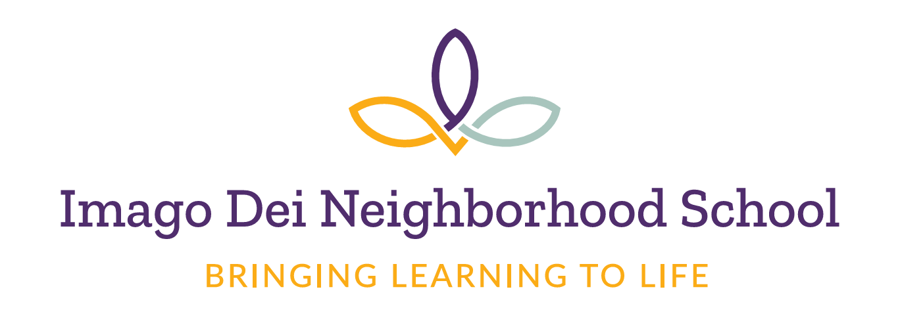
Imago Dei Neighborhood School
Imago Dei opened in September 2021 with 34 students; today, the school serves 155 diverse students in PreK-8th grade from across the Richmond area, with a particular focus on the Northside, East End, and Eastern Henrico County. Imago Dei exists to offer a vibrant, rigorous, and holistic Christian education to economically and racially diverse families, with a particular focus on those families who have historically been disenfranchised from educational options. Imago Dei intentionally seeks to disrupt the pervasive, destructive legacy of hypersegregation by race and class in Richmond's educational ecosystem. Our educational model is rooted in the understanding that children are whole persons, each uniquely and beautifully reflecting their Creator.
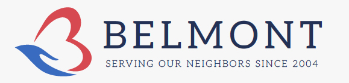
Belmont Community Resource Services
Belmont Community Resource Services, where all are warmly welcome, operates the largest food pantry in the city of Richmond, serving over 700 families every week. The Closet at Belmont also provides clothing, housewares, and children's items to those in need, distributing nearly 130,000 items last year alone. Together with our donors, partners, and volunteers, the Belmont Food Pantry and the Closet at Belmont are changing and sustaining thousands of lives in our community, not only feeding and clothing bodies, but nourishing minds and uplifting spirits as well.
Urban Hope
Founded in 2000, Urban Hope is a housing non-profit that partners with clients to gain financial health; secure safe, quality, affordable rental housing; and chart pathways to homeownership. Our work is inspired by Christian faith, led by and centered on residents, and focused on the East End of Richmond, VA. In our rapidly changing neighborhood, we prioritize racial equity, are committed to anti-displacement practices and policies, and seek to repair past housing injustices and build towards an inclusive community where everyone can find a home.
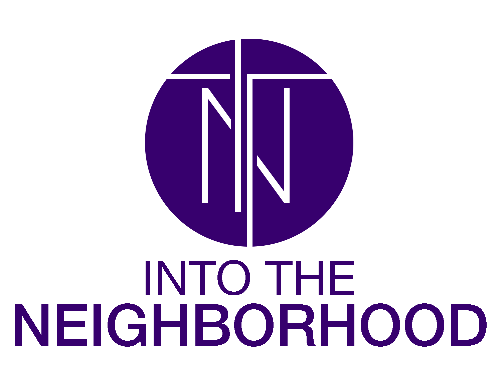
Into The Neighborhood
Into The Neighborhood, based on John 1:14 MSG, exists to love God, love people and equip others to do the same. We'd love to see mobilized, prepared people live out God's mission for their lives and reclaim, restore, and rebuild the landscape of their community - one neighborhood at a time. Join us in loving the Substance Use Disorder Recovery Community of Metro Richmond.
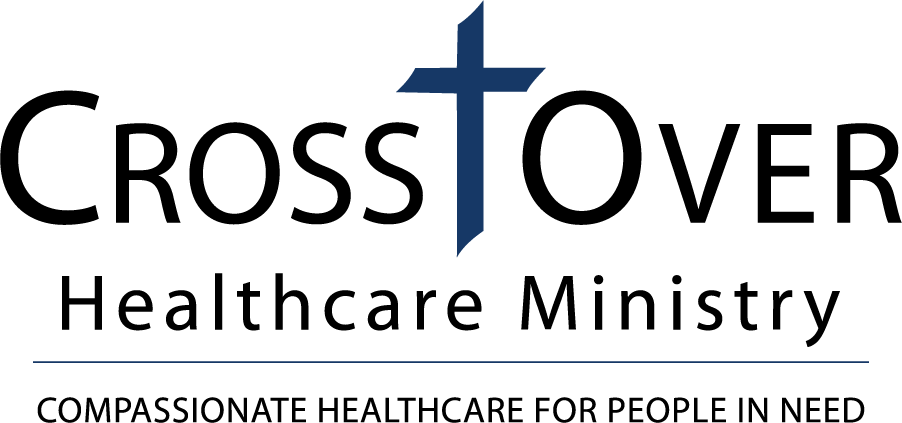
CrossOver Healthcare Ministry
CrossOver Healthcare Ministry provides high-quality, compassionate healthcare to uninsured and Medicaid patients in Central Virginia. As the largest charitable clinic in Virginia, CrossOver serves more than 7,000 patients each year at its 2 locations in Richmond and Henrico. Through the service of more than 500 volunteers CrossOver provides primary care for adults and children, as well as in-house dental, vision, mental health, and pharmacy services. This fall, CrossOver will open a first-of-its-kind Maternal Child Clinic, providing innovative care for pregnant and post-partum mothers and their children in the same clinic space.
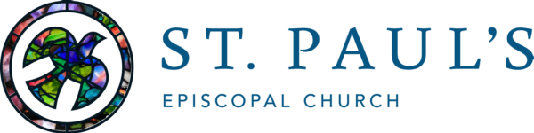
St. Paul's Racial Justice and Healing Ministry
St. Paul's Episcopal Church's Racial Justice and Healing Ministry Team (RJH) was formed in 2023 to live into our call to be repairers of the breach after the congregation underwent a multi-year process with the History and Reconciliation Initiative to uncover, examine, confess, and tell the truth about St. Paul's racial history. The mission of our RJH team is, with God's help, to continue to uncover the truth, create trust, heal wounds, build racial equity to repair and transform ourselves, our community, and unjust social systems in Richmond and beyond. Throughout the year, we offer many opportunities for learning and reflecting on racism and racial justice, principally through Walking with the Enslaved: A Pilgrimage toward Truth, Reconciliation, and Hope in Richmond, Virginia, a joint project of St. Philip's and St. Paul's Episcopal Church.
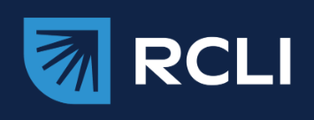
RCLI (Richmond Christian Leadership Initiative)
We want to see metro Richmond thrive - all people, in all places - for God's glory. RCLI equips, connects, and mobilizes a network of gospel-centered leaders who pursue a thriving metro Richmond, together. We do this primarily through our flagship, 9-month Fellowship program, designed for emerging, gospel-centered leaders who want to connect their faith with the needs of metro Richmond. Over the course of 19 years, RCLI has commissioned 17 classes with a total of 391 alumni, now leading in churches, nonprofits, business, education, philanthropy, and public office.
Arrabon is a spiritual formation ministry that equips Christ-followers to actively and creatively pursue healing and reconciliation in their communities. Our experiential learning opportunities, organizational engagement workshops, and spiritual formation app (Apple or Android) will equip you to embody and participate in God's mission of reconciliation.
For Richmond
For Richmond unites the Church for the flourishing and transformation of Metro Richmond. We connect and equip Christian leaders from across sectors to collaborate around the deep needs of the city, including education, foster care, and racial healing. We also mobilize the Church in times of crisis to love and serve the city. The network currently consists of 220 churches, 61 nonprofits, 31 businesses, 4 county governments, 4 social service departments, and 2 school systems in Richmond City, Henrico, Hanover, and Chesterfield.
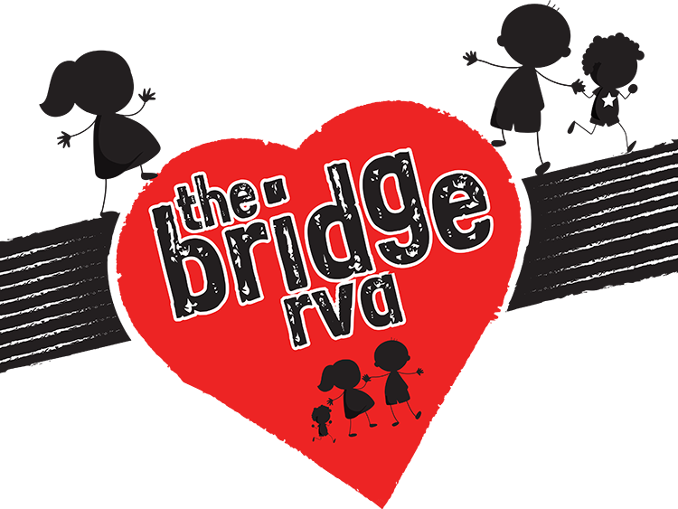
The Bridge RVA
The Bridge RVA is a nonprofit ministry working with marginalized children and families in Richmond, Virginia. Our primary focus is on childhood literacy. The Neighborhood Literacy Center provides a safe, nourishing and trauma-informed learning environment with the goal of helping children from Richmond Public Schools achieve grade level reading by the completion of 5th grade, using a phonics-based, one-on-one, student-paced program. While our main center is located in South Richmond, we desire to see neighborhood literacy centers established near underserved elementary schools throughout our city.
Youth Impact
Founded in 2011, the mission of Youth Impact is to decrease crime, truancy, and the dropout rate by connecting youth to positive organizations. Youth Impact's vision is for youth to fulfill their God-given purpose here on earth. Youth Impact has four programs in operation: Human Trafficking Prevention, ATR Dance Experience, Youth Entrepreneurship (YINOC), and Community Coffee-N-Conversations.
Founded in 1888 as a Lutheran orphanage, enCircle has a rich history of growing to meet the needs of people who are often marginalized in our communities. In Richmond we provide foster care and other services to unaccompanied immigrant children coming from the southern U.S. border. We also serve adults with developmental disabilities, place local children in foster families, and provide trauma-informed counseling to children and adults. Our circle is wide, and all are included.
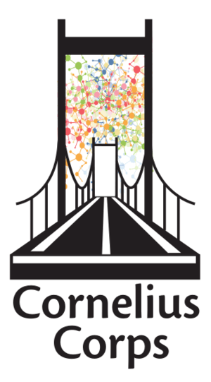
Cornelius Corps
Cornelius Corps is a faith based non-profit that focuses on the intersection of spiritual formation and racial justice. We offer a variety of online and in person classes and workshops with an emphasis on the history of race and faith in our nation in general and the Civil Rights Movement in particular. The principles and practices of this faith based non-violent movement for justice are foundational for following God's call to racial justice today.
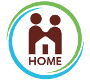
Housing Opportunities Made Equal of Virginia (HOME of VA)
For more than 50 years, we have fought for equal access to safe and stable housing in Virginia. This pursuit of fair housing is the unfinished work of the civil rights movement. Even as we root out bias in policies and practices today, we are also dismantling decades of injustice with long shadows that linger. We pursue a vision of inclusive communities where everyone can live and thrive through three areas of work: enforcing fair housing laws, education and counseling, and changing the law.
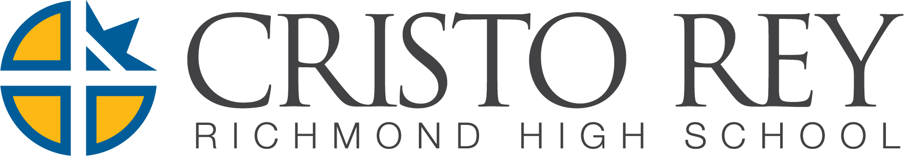
Cristo Rey Richmond High School
Cristo Rey Richmond is an inclusive Catholic learning community that educates young people of limited economic means to become men and women of faith, purpose, and service. Through a rigorous college preparatory curriculum, integrated with a relevant work study experience, students graduate ready to succeed in college and in life.
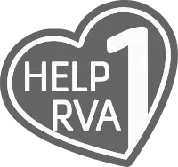
Help1RVA (YMCA of Greater Richmond)
Help1RVA is a collaborative effort to improve the well-being of Greater Richmond community members through connections to resources for social needs. The YMCA of Greater Richmond and Richmond City lead Help1RVA with a steering committee of cross-sector partners throughout Greater Richmond, working to progress community members from crisis to thriving - building a process to obtain resources, an environment to navigate that process, and a pathway for community-based organizations to collaborate.
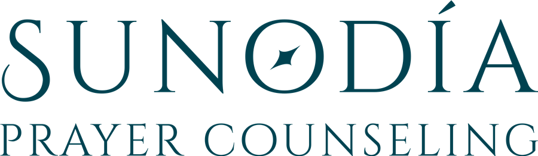
Sunodia Prayer Counseling
Sunodia Prayer Counseling is a Richmond-based ministry offering pastoral care to Christians needing inner healing. Through prayer, we help people connect to God, who alone can communicate the truth of their heart issues in a way that is loving and unique to them. Our mission is to serve the church and help heal the brokenhearted and bind up their wounds (Psalm 147:3).
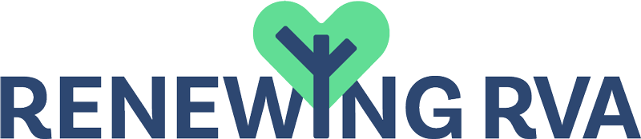
Renewing RVA
Renewing RVA's purpose is to provide high-quality, medical mental health services in conjunction with Biblical Prayer Ministry for the spiritual, mental, and physical flourishing of clients in need. Biblical Prayer Ministry uses intercessory prayer as a tool to help clients understand and find healing for the causes of present day emotional distress. Serving children, adolescents, and adults, we accept Medicaid, several commercial insurance plans, and provide financial assistance for those in need. Renewing RVA is also the fiscal agent of the One Day, One Step annual event.
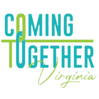
Coming Together Virginia
Coming Together Virginia is a 501c3 non-profit focused on a vision of a racially healed world. We make a difference through allyship, connecting other nonprofit partners, faith-based organizations, and the community to bring intentional conversations to the forefront using a race and equity lens. By hosting facilitated dinner gatherings monthly, we focus on truth-telling in history, building inclusive relationships, healing historical wounds, and taking informed action.
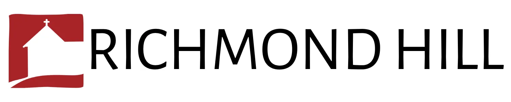
Richmond Hill
Richmond Hill is a spiritual retreat center, residential community, and ecumenical Christian fellowship praying for the racial healing of Metropolitan Richmond. Our work is focused on unearthing and naming the pains of the past and the present; advocating for a just and equitable society; collaborating with allies and activists and creating a stronger community for present and future generations.
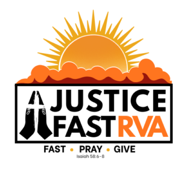
Justice Fast RVA
The purpose of the justice fast is to begin an ongoing process of spiritual discipline to increase our passion for God's desire for comprehensive justice through prayer, fasting, and acts of mercy. During a 40 day period, participants are emailed a daily devotion and suggested prayer points; together we unite in prayer for justice for our city. Participants fast from something they usually take pleasure in and donate the money they would normally spend on that activity to the justice fast.
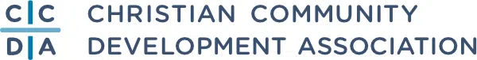
Christian Community Development Association (CCDA)
The annual conference has been inspiring, training, and connecting Christians for close to 40 years. Join us in Richmond, Virginia, from October 7-10, 2026, for amazing speakers, workshops, worship, networking sessions, and more! Whether you're new to Christian Community Development or a seasoned practitioner, there is a place for you at the CCDA Conference.
No organizations match that search.